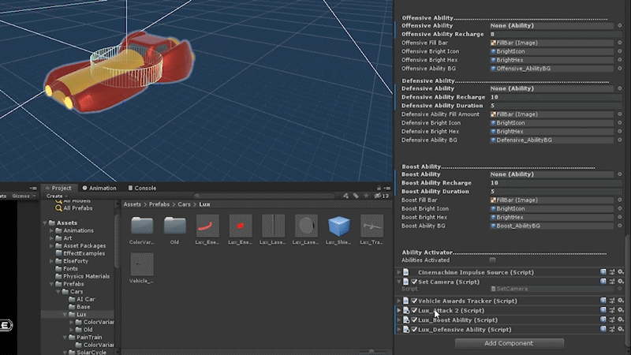

Bottom Line is a cyberpunk themed 3D combat racer. It is set in a future where the galaxy is controlled by corporations that advertise wherever they can, especially in the annual Bottom Line galactic race. Players don't just win this race by the place they finished in, they win by obtaining more hype points than their competition! Players can gain Hype for the company they are representing by destroying their opponents' vehicles and having shorter lap times compared to them. The game is up to 4 player, couch co-op. Don't worry if you don't have enough players though as bots can participate in their place.
The solar cycle was my favorite addition to implement into the game. I was responsible for implementing its abilities which included: missiles locking onto other players and following them, shields that drain the health of surrounding vehicles thus giving it to the solar cycle, and the boost companion system with the boost speed of the solar cycle being based on how much damage it takes while boosting. I was also responsible for implementing the visuals for each of those abilities as well, which include conveyance of when an ability is ready, active, and on cool down.

The vehicle select screen was a very accomplishing feature to implement into the game as it required a lot to get it running properly. I was in charge of implementing most of its elements including the player view-ports, the checking of available controllers and assigning those controllers to specific players, selecting of the vehicle, info screens, readying up, and lastly showing off the vehicles and their abilities as they scroll through the info screens.

The respawn system was a feature I worked on near the beginning of the project. With a race track, we obviously always needed to be able respawn exactly along the track. I worked with our lead programmer Jason on how to find the nearest location along the spline and have the vehicle respawn there. It went through many changes as the project went on. Initially it was a much more complicated system which included respawning based upon who had a moving “king of the hill” like object called the hot spot bot. For example, if a player died and another player had it, the player who died would spawn behind the player with the bot. The hot spot bot was cut from the game so the respawning was simplified.

The shortcut system was a big element of the original prototype of the game. We decided to put it back into the game way later in production after making design changes. I was responsible for implementing the shortcut triggers and the shortcut base classes. Shortcuts open up when the player in front passes a trigger, allowing players in last to use the shortcut to possibly catch up.

This was a fun class hook up system that I was able to work on near the beginning of the project. It was a good base to continue adding more features on top of as the development of the game moved forward. It was also good practice in getting a better understanding of inheritance and abstract classes in C#.
The hot spot bot was a moving “king of the hill” like object that players were able to catch and hold onto. As they held it, they would receive points over time. Players could then destroy them for more points and pick up the bot for themselves to then be the new, moving, king of the hill. I was in charge of implementing all functionality of the hot spot bot and any interaction with it. The hot spot bot was cut as it no longer fit the design of the game.
I initially pitched the game in May of 2019 at our first Senior Capstone meeting at Bradley University. After several rounds of voting, the team I was on had voted to prototype it over the summer. Once we convened in the Fall for our Capstone class, we voted to put Bottom Line into full production rather than choose one of the other ideas on the table.
Over those next four months we further flushed out the design of the game and started developing core systems such as movement, basic combat, and core set pieces/objectives. The game changed a lot from what I initially pitched it as, but by the middle of December, we had our vertical slice of the game.
The spring semester brought a lot of changes to our game, more than we were comfortable with, but we had to make these changes in order for the final product to be solid and polished. A lot of these changes happened after we started play-testing more, this included a guest speaker from Gearbox being able to test our game. We got a lot of good feedback, and decided our game was too complicated for how fast paced it was. We decided to simplify our core game loop and redo the vehicle movement. This allowed us to make our game more approachable and easier to pick up, but at the same time required us to retool some parts of the game that had come quite far.
Once spring break came, the COVID 19 epidemic hit, which then switched our project to being completed entirely through online communication. I can't tell if this hurt or helped how much work was being done on the game by all team members, but we did cut/combine things as a result. This included one of the vehicles, and one of the maps. That left us with one map, and three vehicles.
Over those last couple months we focused on making a product that was polished but had little content over making a product that had a lot of content, but was broken. It is the ultimate crunch dilemma. In the end, it was the right choice, for we made a finished 3D combat racing game that casual gamers found to be an enjoyable little experience, and that is all I could have asked for.
Project on GitHub